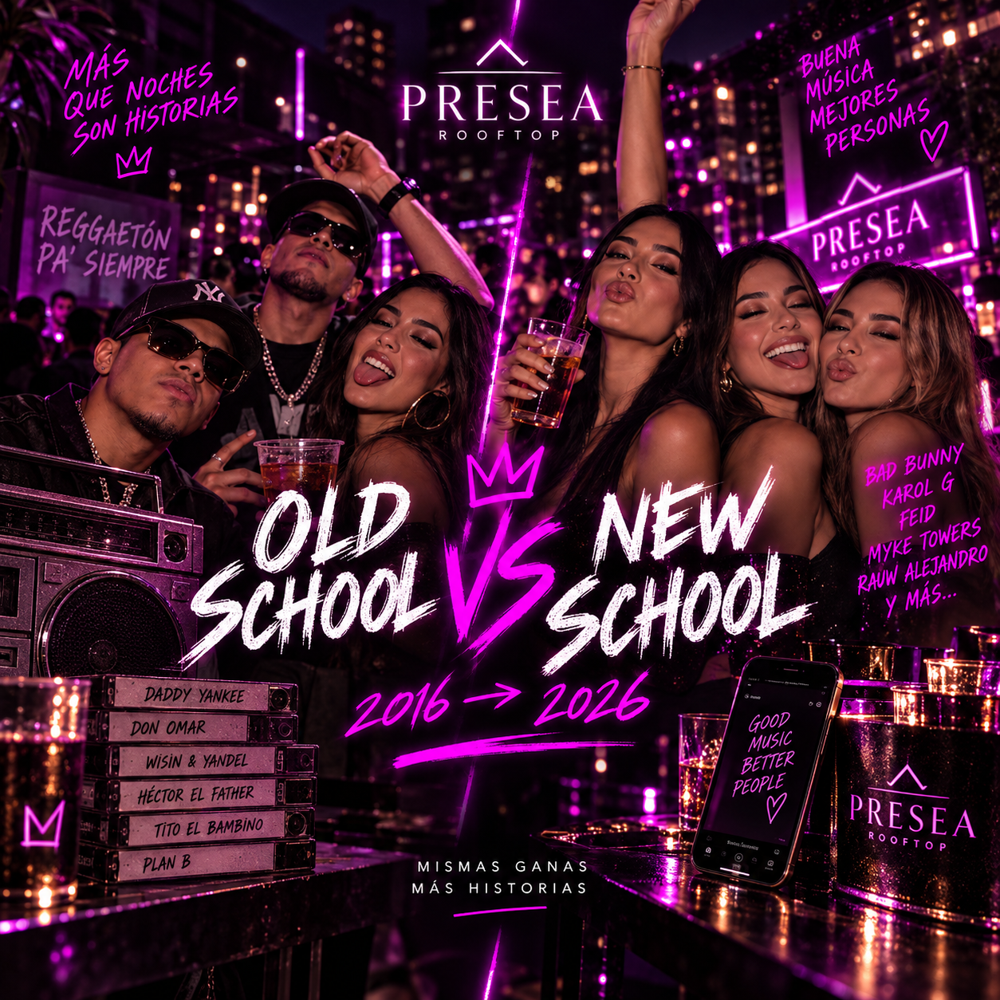
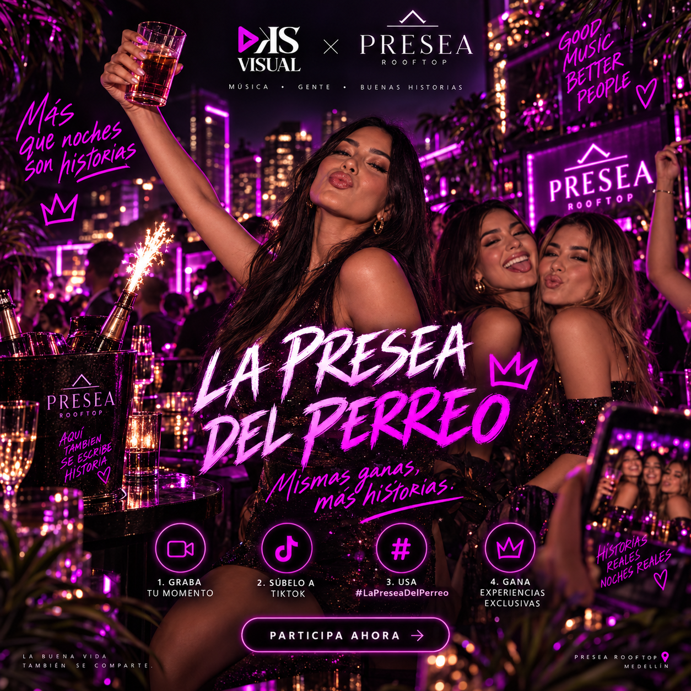

Una idea que puede durar meses,
no una promoción que dura un fin de semana.
La campaña se construye como un sistema de propiedades creativas. Cada una cumple una función distinta: emocionar, activar, generar contenido o convertir.

El reggaetón cambió. El perreo no.
La nostalgia no es decoración. Es un recurso para provocar conversación y conectar edades distintas.

Formatos posibles
- Old School vs New School.
- ¿Reconoces esta canción en un segundo?
- Así salíamos en 2016 / así salimos hoy.
- Archivo Presea: fotos y videos reales de la comunidad.
- Remakes de recuerdos de hace 5 o 10 años.
- “Yo conocí Presea cuando…”

#10Años10Segundos
Una mecánica que cualquiera puede entender sin tutorial de 14 minutos, lo cual ya es una ventaja competitiva considerable.
Cómo bailabas, vestías, salías o escuchabas reggaetón antes y ahora.
5 segundos del “antes”, 5 segundos del “ahora”.
Usa #10Años10Segundos y etiqueta a Presea.
Selección semanal, repost, cover, mesa, botella o Presea del Perreo.
La clave es que el reto produce contenido para Presea sin depender exclusivamente de la cuenta oficial: asistentes y creators se convierten en medio.
La Presea del Perreo
Convertimos el nombre de la marca en una propiedad reconocible: una medalla, placa o símbolo físico que se entrega periódicamente y genera contenido propio.
- Mejor crew de la noche.
- Mejor historia #10Años10Segundos.
- Mejor baile o transición.
- Mejor look.
- Mejor recuerdo del Archivo Presea.
La pieza física hace que el concurso deje de ser un post y se convierta en algo fotografiable, deseable y repetible.

Una campaña que siempre tiene qué contar.
Cada semana mezcla pilares para que el canal no se vuelva una cartelera de flyers.
Archivo
Historias, fotos y recuerdos reales. El pasado de la marca se vuelve activo digital.
Cultura
Old/new, canciones, artistas, memes y códigos de reggaetón.
Personas
Crews, birthdays, asistentes, creators y UGC como protagonistas.
Experiencia
Luces, rooftop, botellas, DJ, momentos y contenido aspiracional.
Conversión
Reservas, mesas, eventos, beneficios y llamadas a la acción.
Challenge
#10Años10Segundos y La Presea del Perreo como formatos recurrentes.